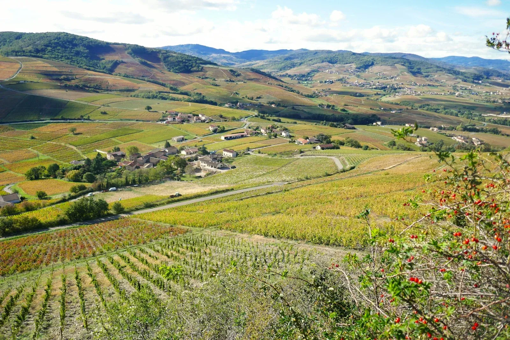

Œnotourisme en Beaujolais
où déguster du vin à deux
Le vignoble commence littéralement aux portes de Villefranche-sur-Saône. Voici où aller pour une après-midi de dégustation en couple, sans improviser sur place.

Villefranche-sur-Saône porte le titre de capitale du Beaujolais, et ce n'est pas qu'une formule touristique : les premières vignes commencent à quelques minutes du centre-ville. Pour un couple logé chez nous, c'est une sortie qui se prépare en une soirée et se vit en une après-midi — à condition de savoir où frapper.
Le Hameau Dubœuf, pour une première approche
À Romanèche-Thorins, à une trentaine de minutes de Villefranche, le Hameau Dubœuf est le passage obligé pour qui découvre la région : un parcours autour de la vigne et du vin, installé dans une ancienne gare, avec dégustation incluse selon la formule choisie. C'est l'option la plus simple quand on ne connaît rien au Beaujolais et qu'on veut repartir avec quelques repères avant d'aller plus loin.
Les horaires varient selon la saison et le site ferme certains jours en basse saison : vérifiez les informations pratiques avant de partir plutôt que de vous fier à une date trouvée en ligne.
La Maison des Beaujolais, sur la route
À Belleville-en-Beaujolais, sur l'axe qui relie Villefranche au nord du vignoble, la Maison des Beaujolais propose un espace de dégustation couvrant les douze appellations de la région, avec vente directe et dégustations commentées sur rendez-vous. Pratique pour un couple qui veut comparer plusieurs appellations sans multiplier les arrêts.
Les domaines, pour une rencontre plus intime
C'est l'option que nous recommandons le plus souvent : les domaines viticoles des appellations Fleurie, Moulin-à-Vent ou Brouilly — toutes à moins de trente minutes de Villefranche — reçoivent en général sur rendez-vous, parfois pour une simple dégustation, parfois pour une promenade commentée dans les vignes suivie d'un verre avec le vigneron. L'accueil y est presque toujours plus personnel qu'en point de vente, mais les disponibilités sont limitées : un message envoyé quelques jours à l'avance évite de trouver porte close.
Deux domaines dans un après-midi, c'est un bon rythme pour un couple. Trois, c'est déjà une journée de travail.
Organiser la journée à deux
Quelques repères pratiques pour que la sortie reste un plaisir plutôt qu'une logistique :
- La question du conducteur — à régler avant de partir : alternez entre deux domaines, réservez un chauffeur pour la journée, ou acceptez de goûter sans toujours finir le verre.
- Prendre rendez-vous — un simple message la veille suffit souvent, et c'est ce qui fait la différence entre une visite expédiée et un accueil qui prend le temps.
- Combiner avec les Pierres Dorées — les villages dorés de Oingt, Ternand ou Bagnols sont sur le chemin de plusieurs domaines : une boucle en fin de journée, à l'heure où la pierre prend sa couleur d'or, complète bien la sortie.
Et au retour ?
Beaucoup de couples logés chez nous choisissent de consacrer une journée au vignoble et la suivante à ne rien faire du tout. La suite est à moins de vingt minutes de la plupart des domaines cités ici : de quoi finir la journée sous la voûte de pierre, bain à remous compris, plutôt que sur la route. Voir le logement et les disponibilités.
Questions fréquentes
Faut-il réserver avant de visiter un domaine ?
Dans la plupart des cas, oui. Beaucoup de domaines du Beaujolais reçoivent sur rendez-vous plutôt qu'en visite libre : un message ou un appel la veille suffit souvent, et l'accueil y est généralement plus personnel qu'en point de vente touristique.
Combien de domaines visiter en une journée, à deux ?
Deux domaines dans un après-midi est un bon rythme pour un couple qui veut prendre le temps. Trois commence à ressembler à une journée de travail plutôt qu'à une sortie détente.
Qui conduit si on déguste du vin ?
C'est la question à régler avant de partir : alternez le conducteur entre deux domaines, prévoyez un chauffeur VTC pour la journée, ou choisissez des domaines où l'on goûte sans nécessairement avaler. Beaucoup de couples logés chez nous font une tournée de domaines un jour et profitent de la suite, jacuzzi compris, le lendemain.
Les horaires et tarifs indiqués sont-ils garantis ?
Non : les horaires, jours de fermeture et tarifs des domaines et du Hameau Dubœuf changent selon la saison. Nous vous recommandons de vérifier directement auprès de chaque lieu avant de vous déplacer.

La Voûte des Sens
Une journée de vignoble,
une nuit sous la voûte.
À Villefranche-sur-Saône, à quarante minutes de Lyon et à moins de trente des plus beaux domaines du Beaujolais.